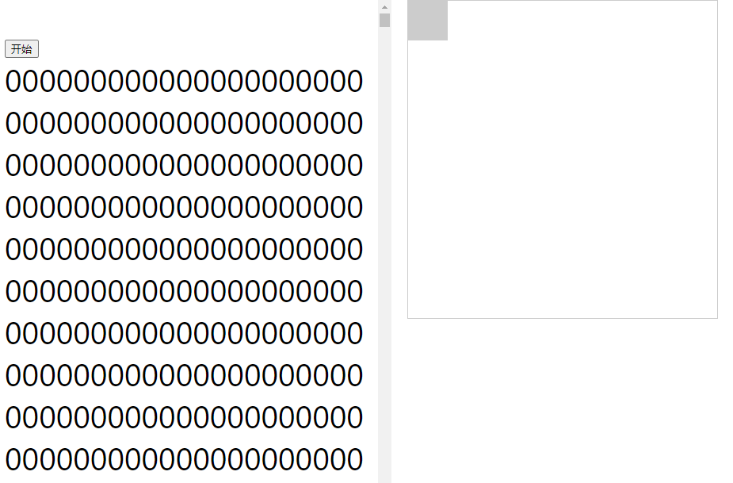
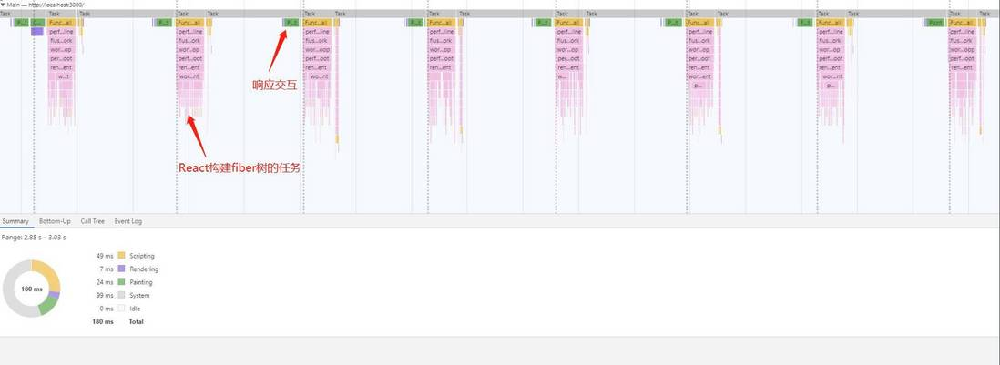
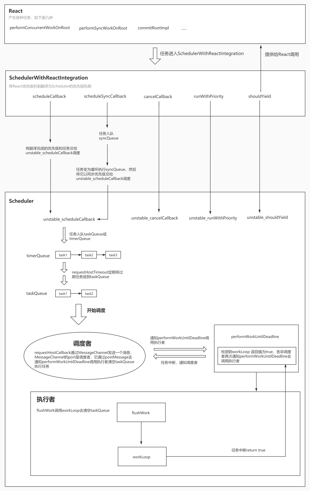

点击进入React源码调试仓库。
Scheduler作为一个独立的包，可以独自承担起任务调度的职责，你只需要将任务和任务的优先级交给它，它就可以帮你管理任务，安排任务的执行。这就是React和Scheduler配合工作的模式。
对于多个任务，它会先执行优先级高的。对于单个任务，它会有节制地去执行。换句话说，线程只有一个，它不会一直占用着线程去执行任务。而是执行一会，中断一下，如此往复。用这样的模式，来避免一直占用有限的资源执行耗时较长的任务，解决用户操作时页面卡顿的问题，实现更快的响应。
我们可以从中梳理出Scheduler中两个重要的行为：多个任务的管理、单个任务的执行控制。
基本概念
为了实现上述的两个行为，它引入两个概念：任务优先级 、 时间片。
任务优先级让任务按照自身的紧急程度排序，这样可以让优先级最高的任务最先被执行到。
时间片规定的是单个任务在这一帧内最大的执行时间，任务一旦执行时间超过时间片，则会被打断，有节制地执行任务。这样可以保证页面不会因为任务连续执行的时间过长而产生卡顿。
原理概述
基于任务优先级和时间片的概念，Scheduler围绕着它的核心目标 - 任务调度，衍生出了两大核心功能：任务队列管理 和 时间片下任务的中断和恢复。
任务队列管理
任务队列管理对应了Scheduler的多任务管理这一行为。在Scheduler内部，把任务分成了两种：未过期的和已过期的，分别用两个队列存储，前者存到timerQueue中，后者存到taskQueue中。
如何区分任务是否过期？
用任务的开始时间（startTime）和当前时间（currentTime）作比较。开始时间大于当前时间，说明未过期，放到timerQueue；开始时间小于等于当前时间，说明已过期，放到taskQueue。
不同队列中的任务如何排序？
当任务一个个入队的时候，自然要对它们进行排序，保证紧急的任务排在前面，所以排序的依据就是任务的紧急程度。而taskQueue和timerQueue中任务紧急程度的判定标准是有区别的。
- taskQueue中，依据任务的过期时间（expirationTime）排序，过期时间越早，说明越紧急，过期时间小的排在前面。过期时间根据任务优先级计算得出，优先级越高，过期时间越早。
- timerQueue中，依据任务的开始时间（startTime）排序，开始时间越早，说明会越早开始，开始时间小的排在前面。任务进来的时候，开始时间默认是当前时间，如果进入调度的时候传了延迟时间，开始时间则是当前时间与延迟时间的和。
任务入队两个队列，之后呢？
如果放到了taskQueue，那么立即调度一个函数去循环taskQueue，挨个执行里面的任务。
如果放到了timerQueue，那么说明它里面的任务都不会立即执行，那就等到了timerQueue里面排在第一个任务的开始时间，看这个任务是否过期，如果是，则把任务从timerQueue中拿出来放入taskQueue，调度一个函数去循环它，执行掉里面的任务；否则过一会继续检查这第一个任务是否过期。
任务队列管理相对于单个任务的执行，是宏观层面的概念，它利用任务的优先级去管理任务队列中的任务顺序，始终让最紧急的任务被优先处理。
单个任务的中断以及恢复
单个任务的中断以及恢复对应了Scheduler的单个任务执行控制这一行为。在循环taskQueue执行每一个任务时，如果某个任务执行时间过长，达到了时间片限制的时间，那么该任务必须中断，以便于让位给更重要的事情（如浏览器绘制），等事情完成，再恢复执行任务。
例如这个例子，点击按钮渲染140000个DOM节点，为的是让React通过scheduler调度一个耗时较长的更新任务。同时拖动方块，这是为了模拟用户交互。更新任务会占用线程去执行任务，用户交互要也要占用线程去响应页面，这就决定了它们两个是互斥的关系。在React的concurrent模式下，通过Scheduler调度的更新任务遇到用户交互之后，会是下面动图里的效果。

执行React任务和页面响应交互这两件事情是互斥的，但因为Scheduler可以利用时间片中断React任务，然后让出线程给浏览器去绘制，所以一开始在fiber树的构建阶段，拖动方块会得到及时的反馈。但是后面卡了一下，这是因为fiber树构建完成，进入了同步的commit阶段，导致交互卡顿。分析页面的渲染过程可以非常直观地看到通过时间片的控制。主线程被让出去进行页面的绘制（Painting和Rendering，绿色和紫色的部分）。

Scheduler要实现这样的调度效果需要两个角色：任务的调度者、任务的执行者。调度者调度一个执行者，执行者去循环taskQueue，逐个执行任务。当某个任务的执行时间比较长，执行者会根据时间片中断任务执行，然后告诉调度者：我现在正执行的这个任务被中断了，还有一部分没完成，但现在必须让位给更重要的事情，你再调度一个执行者吧，好让这个任务能在之后被继续执行完（任务的恢复）。于是，调度者知道了任务还没完成，需要继续做，它会再调度一个执行者去继续完成这个任务。
通过执行者和调度者的配合，可以实现任务的中断和恢复。
原理小结
Scheduler管理着taskQueue和timerQueue两个队列，它会定期将timerQueue中的过期任务放到taskQueue中，然后让调度者通知执行者循环taskQueue执行掉每一个任务。执行者控制着每个任务的执行，一旦某个任务的执行时间超出时间片的限制。就会被中断，然后当前的执行者退场，退场之前会通知调度者再去调度一个新的执行者继续完成这个任务，新的执行者在执行任务时依旧会根据时间片中断任务，然后退场，重复这一过程，直到当前这个任务彻底完成后，将任务从taskQueue出队。taskQueue中每一个任务都被这样处理，最终完成所有任务，这就是Scheduler的完整工作流程。
这里面有一个关键点，就是执行者如何知道这个任务到底完成没完成呢？这是另一个话题了，也就是判断任务的完成状态。在讲解执行者执行任务的细节时会重点突出。
以上是Scheduler原理的概述，下面开始是对React和Scheduler联合工作机制的详细解读。涉及React与Scheduler的连接、调度入口、任务优先级、任务过期时间、任务中断和恢复、判断任务的完成状态等内容。
详细流程
在开始之前，我们先看一下React和Scheduler它们二者构成的一个系统的示意图。

整个系统分为三部分：
- 产生任务的地方：React
- React和Scheduler交流的翻译者：SchedulerWithReactIntegration
- 任务的调度者：Scheduler
React中通过下面的代码，让fiber树的构建任务进入调度流程：
scheduleCallback(
schedulerPriorityLevel,
performConcurrentWorkOnRoot.bind(null, root),
);任务通过翻译者交给Scheduler，Scheduler进行真正的任务调度，那么为什么需要一个翻译者的角色呢？
React与Scheduler的连接
Scheduler帮助React调度各种任务，但是本质上它们是两个完全不耦合的东西，二者各自都有自己的优先级机制，那么这时就需要有一个中间角色将它们连接起来。
实际上，在react-reconciler中提供了这样一个文件专门去做这样的工作，它就是SchedulerWithReactIntegration.old(new).js。它将二者的优先级翻译了一下，让React和Scheduler能读懂对方。另外，封装了一些Scheduler中的函数供React使用。
在执行React任务的重要文件ReactFiberWorkLoop.js中，关于Scheduler的内容都是从SchedulerWithReactIntegration.old(new).js导入的。它可以理解成是React和Scheduler之间的桥梁。
// ReactFiberWorkLoop.js
import {
scheduleCallback,
cancelCallback,
getCurrentPriorityLevel,
runWithPriority,
shouldYield,
requestPaint,
now,
NoPriority as NoSchedulerPriority,
ImmediatePriority as ImmediateSchedulerPriority,
UserBlockingPriority as UserBlockingSchedulerPriority,
NormalPriority as NormalSchedulerPriority,
flushSyncCallbackQueue,
scheduleSyncCallback,
} from './SchedulerWithReactIntegration.old';
SchedulerWithReactIntegration.old(new).js通过封装Scheduler的内容，对React提供两种调度入口函数：scheduleCallback 和 scheduleSyncCallback。任务通过调度入口函数进入调度流程。
例如，fiber树的构建任务在concurrent模式下通过scheduleCallback完成调度，在同步渲染模式下由scheduleSyncCallback完成。
// concurrentMode
// 将本次更新任务的优先级转化为调度优先级
// schedulerPriorityLevel为调度优先级
const schedulerPriorityLevel = lanePriorityToSchedulerPriority(
newCallbackPriority,
);
// concurrent模式
scheduleCallback(
schedulerPriorityLevel,
performConcurrentWorkOnRoot.bind(null, root),
);
// 同步渲染模式
scheduleSyncCallback(
performSyncWorkOnRoot.bind(null, root),
)它们两个其实都是对Scheduler中scheduleCallback的封装，只不过传入的优先级不同而已，前者是传递的是已经本次更新的lane计算得出的调度优先级，后者传递的是最高级别的优先级。另外的区别是，前者直接将任务交给Scheduler，而后者先将任务放到SchedulerWithReactIntegration.old(new).js自己的同步队列中，再将执行同步队列的函数交给Scheduler，以最高优先级进行调度，由于传入了最高优先级，意味着它将会是立即过期的任务，会立即执行掉它，这样能够保证在下一次事件循环中执行掉任务。
function scheduleCallback(
reactPriorityLevel: ReactPriorityLevel,
callback: SchedulerCallback,
options: SchedulerCallbackOptions | void | null,
) {
// 将react的优先级翻译成Scheduler的优先级
const priorityLevel = reactPriorityToSchedulerPriority(reactPriorityLevel);
// 调用Scheduler的scheduleCallback，传入优先级进行调度
return Scheduler_scheduleCallback(priorityLevel, callback, options);
}
function scheduleSyncCallback(callback: SchedulerCallback) {
if (syncQueue === null) {
syncQueue = [callback];
// 以最高优先级去调度刷新syncQueue的函数
immediateQueueCallbackNode = Scheduler_scheduleCallback(
Scheduler_ImmediatePriority,
flushSyncCallbackQueueImpl,
);
} else {
syncQueue.push(callback);
}
return fakeCallbackNode;
}Scheduler中的优先级
说到优先级，我们来看一下Scheduler自己的优先级级别，它为任务定义了以下几种级别的优先级：
export const NoPriority = 0; // 没有任何优先级
export const ImmediatePriority = 1; // 立即执行的优先级，级别最高
export const UserBlockingPriority = 2; // 用户阻塞级别的优先级
export const NormalPriority = 3; // 正常的优先级
export const LowPriority = 4; // 较低的优先级
export const IdlePriority = 5; // 优先级最低，表示任务可以闲置
任务优先级的作用已经提到过，它是计算任务过期时间的重要依据，事关过期任务在taskQueue中的排序。
// 不同优先级对应的不同的任务过期时间间隔
var IMMEDIATE_PRIORITY_TIMEOUT = -1;
var USER_BLOCKING_PRIORITY_TIMEOUT = 250;
var NORMAL_PRIORITY_TIMEOUT = 5000;
var LOW_PRIORITY_TIMEOUT = 10000;
// Never times out
var IDLE_PRIORITY_TIMEOUT = maxSigned31BitInt;
...
// 计算过期时间（scheduleCallback函数中的内容）
var timeout;
switch (priorityLevel) {
case ImmediatePriority:
timeout = IMMEDIATE_PRIORITY_TIMEOUT;
break;
case UserBlockingPriority:
timeout = USER_BLOCKING_PRIORITY_TIMEOUT;
break;
case IdlePriority:
timeout = IDLE_PRIORITY_TIMEOUT;
break;
case LowPriority:
timeout = LOW_PRIORITY_TIMEOUT;
break;
case NormalPriority:
default:
timeout = NORMAL_PRIORITY_TIMEOUT;
break;
}
// startTime可暂且认为是当前时间
var expirationTime = startTime + timeout;
可见，过期时间是任务开始时间加上timeout，而这个timeout则是通过任务优先级计算得出。
React中更全面的优先级讲解在我写的这一篇文章中：React中的优先级
调度入口 - scheduleCallback
通过上面的梳理，我们知道Scheduler中的scheduleCallback是调度流程开始的关键点。在进入这个调度入口之前，我们先来认识一下Scheduler中的任务是什么形式：
var newTask = {
id: taskIdCounter++,
// 任务函数
callback,
// 任务优先级
priorityLevel,
// 任务开始的时间
startTime,
// 任务的过期时间
expirationTime,
// 在小顶堆队列中排序的依据
sortIndex: -1,
};- callback：真正的任务函数，重点，也就是外部传入的任务函数，例如构建fiber树的任务函数：performConcurrentWorkOnRoot
- priorityLevel：任务优先级，参与计算任务过期时间
- startTime：表示任务开始的时间，影响它在timerQueue中的排序
- expirationTime：表示任务何时过期，影响它在taskQueue中的排序
- sortIndex：在小顶堆队列中排序的依据，在区分好任务是过期或非过期之后，sortIndex会被赋值为expirationTime或startTime，为两个小顶堆的队列（taskQueue,timerQueue）提供排序依据
真正的重点是callback，作为任务函数，它的执行结果会影响到任务完成状态的判断，后面我们会讲到，暂时先无需关注。现在我们先来看看scheduleCallback做的事情：它负责生成调度任务、根据任务是否过期将任务放入timerQueue或taskQueue，然后触发调度行为，让任务进入调度。完整代码如下：
function unstable_scheduleCallback(priorityLevel, callback, options) {
// 获取当前时间，它是计算任务开始时间、过期时间和判断任务是否过期的依据
var currentTime = getCurrentTime();
// 确定任务开始时间
var startTime;
// 从options中尝试获取delay，也就是推迟时间
if (typeof options === 'object' && options !== null) {
var delay = options.delay;
if (typeof delay === 'number' && delay > 0) {
// 如果有delay，那么任务开始时间就是当前时间加上delay
startTime = currentTime + delay;
} else {
// 没有delay，任务开始时间就是当前时间，也就是任务需要立刻开始
startTime = currentTime;
}
} else {
startTime = currentTime;
}
// 计算timeout
var timeout;
switch (priorityLevel) {
case ImmediatePriority:
timeout = IMMEDIATE_PRIORITY_TIMEOUT; // -1
break;
case UserBlockingPriority:
timeout = USER_BLOCKING_PRIORITY_TIMEOUT; // 250
break;
case IdlePriority:
timeout = IDLE_PRIORITY_TIMEOUT; // 1073741823 ms
break;
case LowPriority:
timeout = LOW_PRIORITY_TIMEOUT; // 10000
break;
case NormalPriority:
default:
timeout = NORMAL_PRIORITY_TIMEOUT; // 5000
break;
}
// 计算任务的过期时间，任务开始时间 + timeout
// 若是立即执行的优先级（ImmediatePriority），
// 它的过期时间是startTime - 1，意味着立刻就过期
var expirationTime = startTime + timeout;
// 创建调度任务
var newTask = {
id: taskIdCounter++,
// 真正的任务函数，重点
callback,
// 任务优先级
priorityLevel,
// 任务开始的时间，表示任务何时才能执行
startTime,
// 任务的过期时间
expirationTime,
// 在小顶堆队列中排序的依据
sortIndex: -1,
};
// 下面的if...else判断各自分支的含义是：
// 如果任务未过期，则将 newTask 放入timerQueue， 调用requestHostTimeout，
// 目的是在timerQueue中排在最前面的任务的开始时间的时间点检查任务是否过期，
// 过期则立刻将任务加入taskQueue，开始调度
// 如果任务已过期，则将 newTask 放入taskQueue，调用requestHostCallback，
// 开始调度执行taskQueue中的任务
if (startTime > currentTime) {
// 任务未过期，以开始时间作为timerQueue排序的依据
newTask.sortIndex = startTime;
push(timerQueue, newTask);
if (peek(taskQueue) === null && newTask === peek(timerQueue)) {
// 如果现在taskQueue中没有任务，并且当前的任务是timerQueue中排名最靠前的那一个
// 那么需要检查timerQueue中有没有需要放到taskQueue中的任务，这一步通过调用
// requestHostTimeout实现
if (isHostTimeoutScheduled) {
// 因为即将调度一个requestHostTimeout，所以如果之前已经调度了，那么取消掉
cancelHostTimeout();
} else {
isHostTimeoutScheduled = true;
}
// 调用requestHostTimeout实现任务的转移，开启调度
requestHostTimeout(handleTimeout, startTime - currentTime);
}
} else {
// 任务已经过期，以过期时间作为taskQueue排序的依据
newTask.sortIndex = expirationTime;
push(taskQueue, newTask);
// 开始执行任务，使用flushWork去执行taskQueue
if (!isHostCallbackScheduled && !isPerformingWork) {
isHostCallbackScheduled = true;
requestHostCallback(flushWork);
}
}
return newTask;
}这个过程中的重点是任务过期与否的处理。
针对未过期任务，会放入timerQueue，并按照开始时间排列，然后调用requestHostTimeout，为的是等一会，等到了timerQueue中那个应该最早开始的任务（排在第一个的任务）的开始时间，再去检查它是否过期，如果它过期则放到taskQueue中，这样任务就可以被执行了，否则继续等。这个过程通过handleTimeout完成。
handleTimeout的职责是：
- 调用
advanceTimers，检查timerQueue队列中过期的任务，放到taskQueue中。 检查是否已经开始调度，如尚未调度，检查taskQueue中是否已经有任务：
- 如果有，而且现在是空闲的，说明之前的advanceTimers已经将过期任务放到了taskQueue，那么现在立即开始调度，执行任务
- 如果没有，而且现在是空闲的，说明之前的advanceTimers并没有检查到timerQueue中有过期任务，那么再次调用
requestHostTimeout重复这一过程。
总之，要把timerQueue中的任务全部都转移到taskQueue中执行掉才行。
针对已过期任务，在将它放入taskQueue之后，调用requestHostCallback，让调度者调度一个执行者去执行任务，也就意味着调度流程开始。
开始调度-找出调度者和执行者
Scheduler通过调用requestHostCallback让任务进入调度流程，回顾上面scheduleCallback最终调用requestHostCallback执行任务的地方：
if (!isHostCallbackScheduled && !isPerformingWork) {
isHostCallbackScheduled = true;
// 开始进行调度
requestHostCallback(flushWork);
}它既然把flushWork作为入参，那么任务的执行者本质上调用的就是flushWork，我们先不管执行者是如何执行任务的，先关注它是如何被调度的，需要先找出调度者，这需要看一下requestHostCallback的实现：
Scheduler区分了浏览器环境和非浏览器环境，为requestHostCallback做了两套不同的实现。在非浏览器环境下，使用setTimeout实现.
requestHostCallback = function(cb) {
if (_callback !== null) {
setTimeout(requestHostCallback, 0, cb);
} else {
_callback = cb;
setTimeout(_flushCallback, 0);
}
};在浏览器环境，用MessageChannel实现，关于MessageChannel的介绍就不再赘述。
const channel = new MessageChannel();
const port = channel.port2;
channel.port1.onmessage = performWorkUntilDeadline;
requestHostCallback = function(callback) {
scheduledHostCallback = callback;
if (!isMessageLoopRunning) {
isMessageLoopRunning = true;
port.postMessage(null);
}
};
之所以有两种实现，是因为非浏览器环境不存在屏幕刷新率，没有帧的概念，也就不会有时间片，这与在浏览器环境下执行任务有本质区别，因为非浏览器环境基本不胡有用户交互，所以该场景下不判断任务执行时间是否超出了时间片限制，而浏览器环境任务的执行会有时间片的限制。除了这一点之外，虽然两种环境下实现方式不一样，但是做的事情大致相同。
先看非浏览器环境，它将入参（执行任务的函数）存储到内部的变量_callback上，然后调度_flushCallback去执行这个此变量_callback，taskQueue被清空。
再看浏览器环境，它将入参（执行任务的函数）存到内部的变量scheduledHostCallback上，然后通过MessageChannel的port去发送一个消息，让channel.port1的监听函数performWorkUntilDeadline得以执行。performWorkUntilDeadline内部会执行掉scheduledHostCallback，最后taskQueue被清空。
通过上面的描述，可以很清楚得找出调度者：非浏览器环境是setTimeout，浏览器环境是port.postMessage。而两个环境的执行者也显而易见，前者是_flushCallback，后者是performWorkUntilDeadline，执行者做的事情都是去调用实际的任务执行函数。
因为本文围绕Scheduler的时间片调度行为展开，所以主要探讨浏览器环境下的调度行为，performWorkUntilDeadline涉及到调用任务执行函数去执行任务，这个过程中会涉及任务的中断和恢复、任务完成状态的判断，接下来的内容将重点对这两点进行讲解。
任务执行 - 从performWorkUntilDeadline说起
在文章开头的原理概述中提到过performWorkUntilDeadline作为执行者，它的作用是按照时间片的限制去中断任务，并通知调度者再次调度一个新的执行者去继续任务。按照这种认知去看它的实现，会很清晰。
const performWorkUntilDeadline = () => {
if (scheduledHostCallback !== null) {
// 获取当前时间
const currentTime = getCurrentTime();
// 计算deadline，deadline会参与到
// shouldYieldToHost（根据时间片去限制任务执行）的计算中
deadline = currentTime + yieldInterval;
// hasTimeRemaining表示任务是否还有剩余时间，
// 它和时间片一起限制任务的执行。如果没有时间，
// 或者任务的执行时间超出时间片限制了，那么中断任务。
// 它的默认为true，表示一直有剩余时间
// 因为MessageChannel的port在postMessage，
// 是比setTimeout还靠前执行的宏任务，这意味着
// 在这一帧开始时，总是会有剩余时间
// 所以现在中断任务只看时间片的了
const hasTimeRemaining = true;
try {
// scheduledHostCallback去执行任务的函数，
// 当任务因为时间片被打断时，它会返回true，表示
// 还有任务，所以会再让调度者调度一个执行者
// 继续执行任务
const hasMoreWork = scheduledHostCallback(
hasTimeRemaining,
currentTime,
);
if (!hasMoreWork) {
// 如果没有任务了，停止调度
isMessageLoopRunning = false;
scheduledHostCallback = null;
} else {
// 如果还有任务，继续让调度者调度执行者，便于继续
// 完成任务
port.postMessage(null);
}
} catch (error) {
port.postMessage(null);
throw error;
}
} else {
isMessageLoopRunning = false;
}
needsPaint = false;
};performWorkUntilDeadline内部调用的是scheduledHostCallback，它早在开始调度的时候就被requestHostCallback赋值为了flushWork，具体可以翻到上面回顾一下requestHostCallback的实现。
flushWork作为真正去执行任务的函数，它会循环taskQueue，逐一调用里面的任务函数。我们看一下flushWork具体做了什么。
function flushWork(hasTimeRemaining, initialTime) {
...
return workLoop(hasTimeRemaining, initialTime);
...
}它调用了workLoop，并将其调用的结果return了出去。那么现在任务执行的核心内容看来就在workLoop中了。workLoop的调用使得任务最终被执行。
任务中断和恢复
要理解workLoop，需要回顾Scheduler的功能之一：通过时间片限制任务的执行时间。那么既然任务的执行被限制了，它肯定有可能是尚未完成的，如果未完成被中断，那么需要将它恢复。
所以时间片下的任务执行具备下面的重要特点：会被中断，也会被恢复。
不难推测出，workLoop作为实际执行任务的函数，它做的事情肯定与任务的中断恢复有关。我们先看一下它的结构：
function workLoop(hasTimeRemaining, initialTime) {
// 获取taskQueue中排在最前面的任务
currentTask = peek(taskQueue);
while (currentTask !== null) {
if (currentTask.expirationTime > currentTime &&
(!hasTimeRemaining || shouldYieldToHost())) {
// break掉while循环
break
}
...
// 执行任务
...
// 任务执行完毕，从队列中删除
pop(taskQueue);
// 获取下一个任务，继续循环
currentTask = peek(taskQueue);
}
if (currentTask !== null) {
// 如果currentTask不为空，说明是时间片的限制导致了任务中断
// return 一个 true告诉外部，此时任务还未执行完，还有任务，
// 翻译成英文就是hasMoreWork
return true;
} else {
// 如果currentTask为空，说明taskQueue队列中的任务已经都
// 执行完了，然后从timerQueue中找任务，调用requestHostTimeout
// 去把task放到taskQueue中，到时会再次发起调度，但是这次，
// 会先return false，告诉外部当前的taskQueue已经清空，
// 先停止执行任务，也就是终止任务调度
const firstTimer = peek(timerQueue);
if (firstTimer !== null) {
requestHostTimeout(handleTimeout, firstTimer.startTime - currentTime);
}
return false;
}
}workLoop中可以分为两大部分：循环taskQueue执行任务 和 任务状态的判断。
循环taskQueue执行任务
暂且不管任务如何执行，只关注任务如何被时间片限制，workLoop中：
if (currentTask.expirationTime > currentTime &&
(!hasTimeRemaining || shouldYieldToHost())) {
// break掉while循环
break
}currentTask就是当前正在执行的任务，它中止的判断条件是：任务并未过期，但已经没有剩余时间了（由于hasTimeRemaining一直为true，这与MessageChannel作为宏任务的执行时机有关，我们忽略这个判断条件，只看时间片），或者应该让出执行权给主线程（时间片的限制），也就是说currentTask执行得好好的，可是时间不允许，那只能先break掉本次while循环，使得本次循环下面currentTask执行的逻辑都不能被执行到（此处是中断任务的关键）。但是被break的只是while循环，while下部还是会判断currentTask的状态。
由于它只是被中止了，所以currentTask不可能是null，那么会return一个true告诉外部还没完事呢（此处是恢复任务的关键），否则说明全部的任务都已经执行完了，taskQueue已经被清空了，return一个false好让外部终止本次调度。而workLoop的执行结果会被flushWork return出去，flushWork实际上是scheduledHostCallback，当performWorkUntilDeadline检测到scheduledHostCallback的返回值（hasMoreWork）为false时，就会停止调度。
回顾performWorkUntilDeadline中的行为，可以很清晰地将任务中断恢复的机制串联起来：
const performWorkUntilDeadline = () => {
...
const hasTimeRemaining = true;
// scheduledHostCallback去执行任务的函数，
// 当任务因为时间片被打断时，它会返回true，表示
// 还有任务，所以会再让调度者调度一个执行者
// 继续执行任务
const hasMoreWork = scheduledHostCallback(
hasTimeRemaining,
currentTime,
);
if (!hasMoreWork) {
// 如果没有任务了，停止调度
isMessageLoopRunning = false;
scheduledHostCallback = null;
} else {
// 如果还有任务，继续让调度者调度执行者，便于继续
// 完成任务
port.postMessage(null);
}
};当任务被打断之后，performWorkUntilDeadline会再让调度者调用一个执行者，继续执行这个任务，直到任务完成。但是这里有一个重点是如何判断该任务是否完成呢？这就需要研究workLoop中执行任务的那部分逻辑。
判断单个任务的完成状态
任务的中断恢复是一个重复的过程，该过程会一直重复到任务完成。所以判断任务是否完成非常重要，而任务未完成则会重复执行任务函数。
我们可以用递归函数做类比，如果没到递归边界，就重复调用自己。这个递归边界，就是任务完成的标志。因为递归函数所处理的任务就是它本身，可以很方便地把任务完成作为递归边界去结束任务，但是Scheduler中的workLoop与递归不同的是，它只是一个执行任务的，这个任务并不是它自己产生的，而是外部的（比如它去执行React的工作循环渲染fiber树），它可以做到重复执行任务函数，但边界（即任务是否完成）却无法像递归那样直接获取，只能依赖任务函数的返回值去判断。即：若任务函数返回值为函数，那么就说明当前任务尚未完成，需要继续调用任务函数，否则任务完成。workLoop就是通过这样的办法判断单个任务的完成状态。
在真正讲解workLoop中的执行任务的逻辑之前，我们用一个例子来理解一下判断任务完成状态的核心。
有一个任务calculate，负责把currentResult每次加1，一直到3为止。当没到3的时候，calculate不是去调用它自身，而是将自身return出去，一旦到了3，return的是null。这样外部才可以知道calculate是否已经完成了任务。
const result = 3
let currentResult = 0
function calculate() {
currentResult++
if (currentResult < result) {
return calculate
}
return null
}上面是任务，接下来我们模拟一下调度，去执行calculate。但执行应该是基于时间片的，为了观察效果，只用setInterval去模拟因为时间片中止恢复任务的机制（相当粗糙的模拟，只需明白这是时间片的模拟即可，重点关注任务完成状态的判断），1秒执行它一次，即一次只完成全部任务的三分之一。
另外Scheduler中有两个队列去管理任务，我们暂且只用一个队列（taskQueue）存储任务。除此之外还需要三个角色：把任务加入调度的函数（调度入口scheduleCallback）、开始调度的函数（requestHostCallback）、执行任务的函数（workLoop，关键逻辑所在）。
const result = 3
let currentResult = 0
function calculate() {
currentResult++
if (currentResult < result) {
return calculate
}
return null
}
// 存放任务的队列
const taskQueue = []
// 存放模拟时间片的定时器
let interval
// 调度入口----------------------------------------
const scheduleCallback = (task, priority) => {
// 创建一个专属于调度器的任务
const taskItem = {
callback: task,
priority
}
// 向队列中添加任务
taskQueue.push(taskItem)
// 优先级影响到任务在队列中的排序，将优先级最高的任务排在最前面
taskQueue.sort((a, b) => (a.priority - b.priority))
// 开始执行任务，调度开始
requestHostCallback(workLoop)
}
// 开始调度-----------------------------------------
const requestHostCallback = cb => {
interval = setInterval(cb, 1000)
}
// 执行任务-----------------------------------------
const workLoop = () => {
// 从队列中取出任务
const currentTask = taskQueue[0]
// 获取真正的任务函数，即calculate
const taskCallback = currentTask.callback
// 判断任务函数否是函数，若是，执行它，将返回值更新到currentTask的callback中
// 所以，taskCallback是上一阶段执行的返回值，若它是函数类型，则说明上一次执行返回了函数
// 类型，说明任务尚未完成，本次继续执行这个函数，否则说明任务完成。
if (typeof taskCallback === 'function') {
currentTask.callback = taskCallback()
console.log('正在执行任务，当前的currentResult 是', currentResult);
} else {
// 任务完成。将当前的这个任务从taskQueue中移除，并清除定时器
console.log('任务完成，最终的 currentResult 是', currentResult);
taskQueue.shift()
clearInterval(interval)
}
}
// 把calculate加入调度，也就意味着调度开始
scheduleCallback(calculate, 1)最终的执行结果如下：
正在执行任务，当前的currentResult 是 1 正在执行任务，当前的currentResult 是 2 正在执行任务，当前的currentResult 是 3 任务完成，最终的 currentResult 是 3
可见，如果没有加到3，那么calculate会return它自己，workLoop若判断返回值为function，说明任务还未完成，它就会继续调用任务函数去完成任务。
这个例子只保留了workLoop中判断任务完成状态的逻辑，其余的地方并不完善，要以真正的的workLoop为准，现在让我们贴出它的全部代码，完整地看一下真正的实现：
function workLoop(hasTimeRemaining, initialTime) {
let currentTime = initialTime;
// 开始执行前检查一下timerQueue中的过期任务，
// 放到taskQueue中
advanceTimers(currentTime);
// 获取taskQueue中最紧急的任务
currentTask = peek(taskQueue);
// 循环taskQueue，执行任务
while (
currentTask !== null &&
!(enableSchedulerDebugging && isSchedulerPaused)
) {
if (
currentTask.expirationTime > currentTime &&
(!hasTimeRemaining || shouldYieldToHost())
) {
// 时间片的限制，中断任务
break;
}
// 执行任务 ---------------------------------------------------
// 获取任务的执行函数，这个callback就是React传给Scheduler
// 的任务。例如：performConcurrentWorkOnRoot
const callback = currentTask.callback;
if (typeof callback === 'function') {
// 如果执行函数为function，说明还有任务可做，调用它
currentTask.callback = null;
// 获取任务的优先级
currentPriorityLevel = currentTask.priorityLevel;
// 任务是否过期
const didUserCallbackTimeout = currentTask.expirationTime <= currentTime;
// 获取任务函数的执行结果
const continuationCallback = callback(didUserCallbackTimeout);
if (typeof continuationCallback === 'function') {
// 检查callback的执行结果返回的是不是函数，如果返回的是函数，则将这个函数作为当前任务新的回调。
// concurrent模式下，callback是performConcurrentWorkOnRoot，其内部根据当前调度的任务
// 是否相同，来决定是否返回自身，如果相同，则说明还有任务没做完，返回自身，其作为新的callback
// 被放到当前的task上。while循环完成一次之后，检查shouldYieldToHost，如果需要让出执行权，
// 则中断循环，走到下方，判断currentTask不为null，返回true，说明还有任务，回到performWorkUntilDeadline
// 中，判断还有任务，继续port.postMessage(null)，调用监听函数performWorkUntilDeadline（执行者），
// 继续调用workLoop行任务
// 将返回值继续赋值给currentTask.callback，为得是下一次能够继续执行callback，
// 获取它的返回值，继续判断任务是否完成。
currentTask.callback = continuationCallback;
} else {
if (currentTask === peek(taskQueue)) {
pop(taskQueue);
}
}
advanceTimers(currentTime);
} else {
pop(taskQueue);
}
// 从taskQueue中继续获取任务，如果上一个任务未完成，那么它将不会
// 被从队列剔除，所以获取到的currentTask还是上一个任务，会继续
// 去执行它
currentTask = peek(taskQueue);
}
// return 的结果会作为 performWorkUntilDeadline
// 中判断是否还需要再次发起调度的依据
if (currentTask !== null) {
return true;
} else {
// 若任务完成，去timerQueue中找需要最早开始执行的那个任务
// 调度requestHostTimeout，目的是等到了它的开始事件时把它
// 放到taskQueue中，再次调度
const firstTimer = peek(timerQueue);
if (firstTimer !== null) {
requestHostTimeout(handleTimeout, firstTimer.startTime - currentTime);
}
return false;
}
}所以，workLoop是通过判断任务函数的返回值去识别任务的完成状态的。
总结一下判断任务完成状态与任务执行的整体关系：当开始调度后，调度者调度执行者去执行任务，实际上是执行任务上的callback（也就是任务函数）。如果执行者判断callback返回值为一个function，说明未完成，那么会将返回的这个function再次赋值给任务的callback，由于任务还未完成，所以并不会被剔除出taskQueue，currentTask获取到的还是它，while循环到下一次还是会继续执行这个任务，直到任务完成出队，才会继续下一个。
另外有一个点需要提一下，就是构建fiber树的任务函数：performConcurrentWorkOnRoot，它接受的参数是fiberRoot。
function performConcurrentWorkOnRoot(root) {
...
}在workLoop中它会被这样调用（callback即为performConcurrentWorkOnRoot）：
const didUserCallbackTimeout = currentTask.expirationTime <= currentTime;
const continuationCallback = callback(didUserCallbackTimeout);didUserCallbackTimeout明显是boolean类型的值，并不是fiberRoot，但performConcurrentWorkOnRoot却能正常调用。这是因为在开始调度，以及后续的return自身的时候，都在bind的时候将root传进去了。
// 调度的时候
scheduleCallback(
schedulerPriorityLevel,
performConcurrentWorkOnRoot.bind(null, root),
);
// 其内部return自身的时候
function performConcurrentWorkOnRoot(root) {
...
if (root.callbackNode === originalCallbackNode) {
return performConcurrentWorkOnRoot.bind(null, root);
}
return null;
}这样的话，再给它传参数调用它，那这个参数只能作为后续的参数被接收到，performConcurrentWorkOnRoot中接收到的第一个参数还是bind时传入的那个root，这个特点与bind的实现有关。可以跑一下下面的这个简单例子：
function test(root, b) {
console.log(root, b)
}
function runTest() {
return test.bind(null, 'root')
}
runTest()(false)
// 结果：root false以上，是Scheduler执行任务时的两大核心逻辑：任务的中断与恢复 & 任务完成状态的判断。它们协同合作，若任务未完成就中断了任务，那么调度的新执行者会恢复执行该任务，直到它完成。到此，Scheduler的核心部分已经写完了，下面是取消调度的逻辑。
取消调度
通过上面的内容我们知道，任务执行实际上是执行的任务的callback，当callback是function的时候去执行它，当它为null的时候会发生什么？当前的任务会被剔除出taskQueue，让我们再来看一下workLoop函数：
function workLoop(hasTimeRemaining, initialTime) {
...
// 获取taskQueue中最紧急的任务
currentTask = peek(taskQueue);
while (currentTask !== null) {
...
const callback = currentTask.callback;
if (typeof callback === 'function') {
// 执行任务
} else {
// 如果callback为null，将任务出队
pop(taskQueue);
}
currentTask = peek(taskQueue);
}
...
}所以取消调度的关键就是将当前这个任务的callback设置为null。
function unstable_cancelCallback(task) {
...
task.callback = null;
}
为什么设置callback为null就能取消任务调度呢？因为在workLoop中，如果callback是null会被移出taskQueue，所以当前的这个任务就不会再被执行了。它取消的是当前任务的执行，while循环还会继续执行下一个任务。
取消任务在React的场景是什么呢？当一个更新任务正在进行的时候，突然有高优先级任务进来了，那么就要取消掉这个正在进行的任务，这只是众多场景中的一种。
function ensureRootIsScheduled(root: FiberRoot, currentTime: number) {
...
if (existingCallbackNode !== null) {
const existingCallbackPriority = root.callbackPriority;
if (existingCallbackPriority === newCallbackPriority) {
return;
}
// 取消掉原有的任务
cancelCallback(existingCallbackNode);
}
...
}总结
Scheduler用任务优先级去实现多任务的管理，优先解决高优任务，用任务的持续调度来解决时间片造成的单个任务中断恢复问题。任务函数的执行结果为是否应该结束当前任务的调度提供参考，另外，在有限的时间片内完成任务的一部分，也为浏览器响应交互与完成任务提供了保障。
欢迎扫码关注公众号，发现更多技术文章
**粗体** _斜体_ [链接](http://example.com) `代码` - 列表 > 引用。你还可以使用@来通知其他用户。👏👏👏 好像是懂了，又好像没懂
作者太厉害了，你的react源码系列我都追了，收益颇丰👏👏
请问timerQueue 是在什么情况下会被使用到呢， 能不能具体说个场景呢
写的太好了, 感谢分享!!!
如果拖动的事件用react的事件的话，那么渲染任务是不是就会被取消啊？